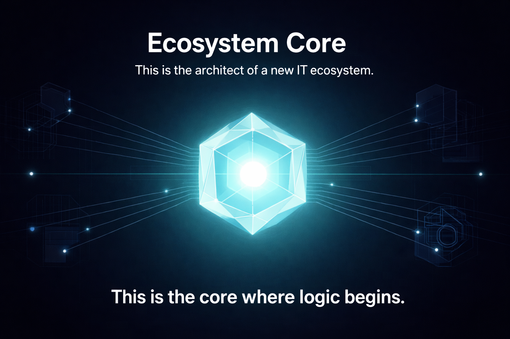

Beeldcategorieën

Backgrounds
Neon‑fusion achtergronden voor alle ecosystemen.
Icons
Ecosystem‑iconen voor MIKE‑CORE, FUSION, TRIAD en AIEWS.
Logos
Branding‑logo’s voor alle subsystemen.

MIKE‑CORE Visuals
7‑layer diagram, drift‑control, ecosystem, security.

TRIAD Visuals
3‑layer map, ecosystem diagram, learning flow.

AIEWS Visuals
Architecture, ecosystem map, trust‑zones.